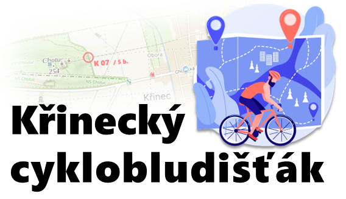

Cykloorientační závod jednotlivců a dvojic.
Délku a náročnost trasy si určuje každý závodník sám
Cykloorientační závod jednotlivců a dvojic.
Délku a náročnost trasy si určuje každý závodník sám
| Start závodu |
|---|
| 18.08.2024 ve 14.00 |
| Startovné |
|---|
| 150 Kč on-line |
| 200 Kč na místě |
| 200 Kč on-line |
| 300 Kč na místě |
| Místo konání |
|---|
| Zámecký park Křinec |
| Kategorie |
|---|
| Jednotlivci klasik |
| Jednotlivci elektro |
| Dvojice klasik |
| Dvojice elektro |
Start
Startuje se hromadně, v případě většího počtu účastníků budou závodníci startovat postupně.
Mapu závodu obdrží závodníci těsně před startem. Na mapě bude zakresleno 20 kontrol s různým bodovým
ohodnocením.
S mapou závodníci obdrží i bodovací kartičku, do které budou vyznačovat nalezené kontroly.
Závod
Závodníci musí závod dokončit v předem stanoveném limitu dvou hodin, pozdější příjezd do cíle bude
penalizován.
V případě soutěže dvojic musí oba závodníci celý závod absolvovat společně, tzn. pohybovat se na doslech.
Za nalezení kontroly obdrží závodník příslušný počet bodů. Nalezením se rozumí označení bodové kartičky
kleštičkami na kontrole.
O pořadí v závodě rozhodují body za nalezené kontroly. V případě bodové rovnosti bude rozhodovat cílový
čas.
Kontroly
Kontroly budou bodovány v rozmezí od 1 do 50 bodů, přičemž počet bodů odpovídá obtížnosti jejich dosažení
(vzdálenost, terén, časová náročnost).
Kontroly budou značeny bílo-oranžovými orienťáckými lampiónky s kleštičkami pro zaznamenání průjezdu.
Aby nebylo možné kontroly zaměnit, budou všechny kontroly a kleštičky označeny číslem kontroly (K01 –
K20).
Průjezd kontrolou si závodníci sami označí do bodovací kartičky, kterou obdrží společně s mapou před
startem.
Časový limit
Na celý závod je časový limit 2 hodiny. V případě překročení tohoto limitu bude závodníkům udělena
penalizace
– prvních pět minut po limitu: 2 body za každou započatou minutu, od šesté minuty 5 bodů za každou
započatou
minutu,
od jedenácté minuty 10 bodů za každou započatou minutu.
Příklad: překročení limitu o 4 minuty – penalizace 8 bodů, překročení limitu o 8 minut – penalizace 25
bodů
(10 + 15), překročení limitu o 14 minut –
penalizace 75 bodů (10 + 25 + 40).
Pořadí
Pořadí bude určeno dle počtu získaných bodů za jednotlivé kontroly (po odečtení případné penalizace). V
případě
rovnosti bodů bude rozhodovat
dřívější čas příjezdu do cíle.
Důležité
Závodníci startují na vlastní nebezpečí. Jsou povinni dodržovat pravidla závodu, pokyny pořadatelů a
obecně
právní předpisy. Doporučujeme lékařskou prohlídku a úrazové pojištění pro den závodu.
Cyklistická helma je povinná během celého závodu. U závodníků mladších 18 let je nutný souhlas zákonného
zástupce.
Doporučujeme mobilní telefon s aplikací Záchranka.
Závod se koná za plného silničního provozu. Závodníci se zavazují dodržovat Zákon o silničním provozu,
Lesní
zákon a další relevantní právní předpisy a pravidla slušného pobytu v přírodě.
Používání jiných dopravních prostředků než kol je zakázáno.